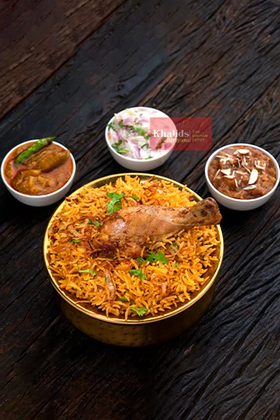

Biriyani Recipe!
Biriyani, a spicy chicken and rice dish, is one of the most well-known Indian-Pakistani dishes.

Biriyani’s ingredients:
-
2 1/2 tablespoons olive oil
- 3 tablespoons plain yogurt
- 2 tablespoons distilled white vinegar
- 1 medium onion, sliced
- 2 medium tomatoes, chopped
-
2 small green chile peppers
- 2 cloves garlic, crushed
- 1 tablespoon ginger paste
- 2 tablespoons garam masala
- 1 tablespoon dried mint
- salt and pepper to taste
- 5 sprigs cilantro
- 1 (3 pound) whole chicken, skin removed and cut into pieces
- 2 quarts water
- 4 cups uncooked basmati rice
- 1 cinnamon stick
- 1 bay leaf
- 4 pods green cardamom
- 1 pod black cardamom
- 1/4 teaspoon powdered yellow food coloring
How to Make Biriyani
-
Heat olive oil in a large skillet over medium heat. Stir in yogurt and vinegar.
-
Add onion; cook and stir until golden and tender.
-
Add tomatoes, chile peppers, garlic, and ginger paste. Cook and stir until tomatoes are tender.
-
Place chicken into tomato-onion mixture in the skillet. Reduce heat to medium-low, cover, and continue cooking, stirring occasionally, until chicken is no longer pink in the center and the juices run clear, about 45 minutes. An instant-read thermometer inserted into meat should read at least 165°F (74°C).
-
Meanwhile, bring water and rice to a boil in a large pot. Mix in cinnamon stick, bay leaf, green cardamom, and black cardamom. Season with salt.
-
Cover, reduce heat to low, and simmer until rice is tender and water is absorbed, about 20 minutes. Discard cinnamon stick, bay leaf, and cardamom.
-
Spread 1/2 of the cooked rice in the bottom of a large serving dish. Pour chicken mixture on top. Cover with remaining cooked rice. Sprinkle with food coloring; mix to serve.